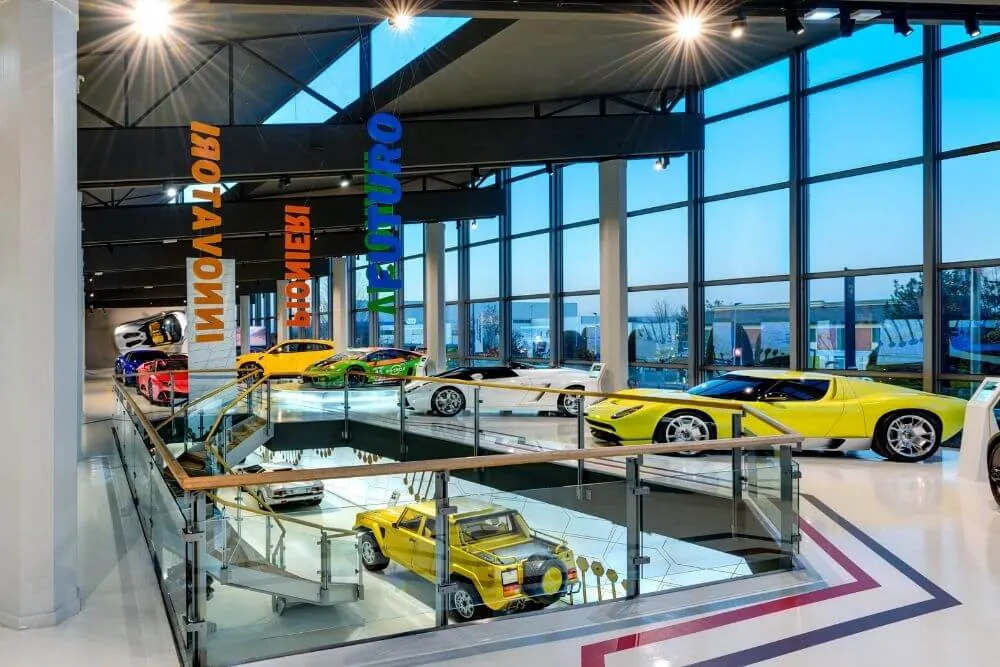

A fascinante história, os modelos icônicos e os passeios pelas linhas de produção do Museu
Automobili
Lamborghini revelam 60 anos de inovação que impulsionam a Lamborghini em direção ao futuro. Desde as visionárias
criações iniciais de Ferruccio Lamborghini, como o Miura e o Countach, até os mais recentes superesportivos
exclusivos, como o Huracán Performante, o Aventador SVJ e os raros Centenario, Sesto Elemento e Veneno, a marca
evoluiu para incluir os primeiros Lamborghinis com tecnologia híbrida, como o Sian e o Countach LPI 800-4. O
Museu Automobili Lamborghini oferece uma experiência interativa, agora aprimorada pelo novo simulador de
condução, intensificando as emoções e a descoberta dos veículos em exposição. É aberto todos os dias

De 1 de outubro a 30 de abril, das 9h30 às 18h00 (última entrada às 17h00)
De 2 de maio a 30 de setembro, das 9h30 às 19h00 (última entrada às 18h00)
DIAS FECHADOS EM 2023
Agosto: 15
Setembro: 12 (fechamento antecipado às 16h00); 21 (abertura adiada para as 11h00)
Outubro: 26 (fechamento antecipado às 15h00)
Dezembro: 16 (fechado todo o dia); 17 (fechado o dia todo); 24 (fechamento antecipado às 14h00); 25; 31
(fechamento antecipado às 14h)